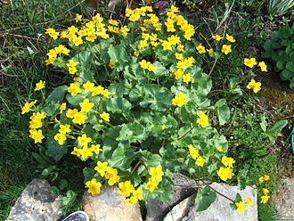

Marsh Marigold
Caltha palustris, known as marsh-marigold and kingcup, is a small to medium size perennial herbaceous plant of the buttercup family, native to marshes, fens, ditches and wet woodland in temperate regions of the Northern Hemisphere. It flowers between April and August, dependent on altitude and latitude, but occasional flowers may occur at other times.
Meadowsweet
Filipendula ulmaria, commonly known as meadowsweet or mead wort, is a perennial herbaceous plant in the family Rosaceae that grows in damp meadows. It is native throughout most of Europe and Western Asia (Near east and Middle east). It has been introduced and naturalised in North America. Meadowsweet has also been referred to as queen of the meadow, pride of the meadow, meadow-wort, meadow queen, lady of the meadow, dollof, meadsweet, and bridewort.
Nightshade
The Solanaceae (/ˌsɒlə'neIsi:ˌaI/), or the nightshades, are a family of flowering plants that ranges from annual and perennial herbs to vines, lianas, epiphytes, shrubs, and trees, and includes a number of agricultural crops, medicinal plants, spices, weeds, and ornamentals. Many members of the family contain potent alkaloids, and some are highly toxic, but many—including tomatoes, potatoes, eggplant, bell and chili peppers—are used as food. The family belongs to the order Solanales, in the asterid group and class Magnoliopsida (dicotyledons). The Solanaceae consists of about 98 genera and some 2,700 species, with a great diversity of habitats, morphology and ecology.
Willow
Willows, also called sallows and osiers, of the genus Salix, comprise around 350 species (plus numerous hybrids) of typically deciduous trees and shrubs, found primarily on moist soils in cold and temperate regions. Most species are known as willow, but some narrow-leaved shrub species are called osier, and some broader-leaved species are referred to as sallow (from Old English sealh, related to the Latin word salix, willow). Some willows (particularly arctic and alpine species) are low-growing or creeping shrubs; for example, the dwarf willow (Salix herbacea) rarely exceeds 6 centimetres (2+1/2 in) in height, though it spreads widely across the ground.
Alder
Alders are trees comprising the genus Alnus in the birch family Betulaceae. The genus comprises about 35 species of monoecious trees and shrubs, a few reaching a large size, distributed throughout the north temperate zone with a few species extending into Central America, as well as the northern and southern Andes.
Mallards
The mallard (/'mæla:rd, 'mælərd/) or wild duck (Anas platyrhynchos) is a dabbling duck that breeds throughout the temperate and subtropical Americas, Eurasia, and North Africa, and has been introduced to New Zealand, Australia, Peru, Brazil, Uruguay, Argentina, Chile, Colombia, the Falkland Islands, and South Africa. This duck belongs to the subfamily Anatinae of the waterfowl family Anatidae. Males have purple patches on their wings, while the females (hens or ducks) have mainly brown-speckled plumage. Both sexes have an area of white-bordered black or iridescent blue feathers called a speculum on their wings; males especially tend to have blue speculum feathers. The mallard is 50-65 cm (20-26 in) long, of which the body makes up around two-thirds the length. The wingspan is 81-98 cm (32-39 in) and the bill is 4.4 to 6.1 cm (1.7 to 2.4 in) long. It is often slightly heavier than most other dabbling ducks, weighing 0.7-1.6 kg (1.5-3.5 lb). Mallards live in wetlands, eat water plants and small animals, and are social animals preferring to congregate in groups or flocks of varying sizes.
Wigeon
The Eurasian wigeon or European wigeon (Mareca penelope), also known as the widgeon or the wigeon, is one of three species of wigeon in the dabbling duck genus Mareca. It is common and widespread within its Palearctic range.
Graylag Geese
The greylag goose or graylag goose (Anser anser) is a species of large goose in the waterfowl family Anatidae and the type species of the genus Anser. It has mottled and barred grey and white plumage and an orange beak and pink legs. A large bird, it measures between 74 and 91 centimetres (29 and 36 in) in length, with an average weight of 3.3 kilograms (7 lb 4 oz). Its distribution is widespread, with birds from the north of its range in Europe and Asia migrating southwards to spend the winter in warmer places. It is the ancestor of most breeds of domestic goose, having been domesticated at least as early as 1360 BC. The genus name is from anser, the Latin for "goose".
Grey Herons
The grey heron (Ardea cinerea) is a long-legged wading bird of the heron family, Ardeidae, native throughout temperate Europe and Asia and also parts of Africa. It is resident in much of its range, but some populations from the more northern parts migrate southwards in autumn. A bird of wetland areas, it can be seen around lakes, rivers, ponds, marshes and on the sea coast. It feeds mostly on aquatic creatures which it catches after standing stationary beside or in the water or stalking its prey through the shallows. Standing up to 1 metre (3 ft 3 in) tall, adults weigh from 1 to 2 kg (2 to 4 lb). They have a white head and neck with a broad black stripe that extends from the eye to the black crest. The body and wings are grey above and the underparts are greyish-white, with some black on the flanks. The long, sharply pointed beak is pinkish-yellow and the legs are brown.
Coots
The Eurasian coot (Fulica atra), also known as the common coot, or Australian coot, is a member of the rail and crake bird family, the Rallidae. It is found in Europe, Asia, Australia, New Zealand and parts of North Africa. It has a slaty-black body, a glossy black head and a white bill with a white frontal shield. The sexes are similar. Similar looking coot species are found throughout the world, with the largest variety of coot species living in South America.
Atlantic Salmon
The Atlantic salmon (Salmo salar) is a species of ray-finned fish in the family Salmonidae. It is the third largest of the Salmonidae, behind Siberian taimen and Pacific Chinook salmon, growing up to a meter in length. Atlantic salmon are found in the northern Atlantic Ocean and in rivers that flow into it. Most populations are anadromous, hatching in streams and rivers but moving out to sea as they grow where they mature, after which the adults seasonally move upstream again to spawn.
Fresh Water Pearl Mussels
The freshwater pearl mussel (Margaritifera margaritifera) is an endangered species of freshwater mussel, an aquatic bivalve mollusc in the family Margaritiferidae. Although the name "freshwater pearl mussel" is often used for this species, other freshwater mussel species (e.g. Margaritifera auricularia) can also create pearls and some can also be used as a source of mother of pearl. Most cultured pearls today come from Hyriopsis species in Asia, or Amblema species in North America, both members of the related family Unionidae; pearls are also found within species in the genus Unio. The interior of the shell of Margaritifera margaritifera has thick nacre (the inner mother of pearl layer of the shell). This species is capable of making fine-quality pearls, and was historically exploited in the search for pearls from wild sources. In recent times, the Russian malacologist Valeriy Zyuganov received worldwide reputation after he discovered that the pearl mussel exhibited negligible senescence and he determined that it had a maximum lifespan of 210-250 years. The data of V. V. Zyuganov have been confirmed by Finnish malacologists and gained general acceptance.

Kingfishers
The common kingfisher (Alcedo atthis), also known as the Eurasian kingfisher and river kingfisher, is a small kingfisher with seven subspecies recognized within its wide distribution across Eurasia and North Africa. It is resident in much of its range, but migrates from areas where rivers freeze in winter. This sparrow-sized bird has the typical short-tailed, large-headed kingfisher profile; it has blue upperparts, orange underparts and a long bill. It feeds mainly on fish, caught by diving, and has special visual adaptations to enable it to see prey under water. The glossy white eggs are laid in a nest at the end of a burrow in a riverbank.